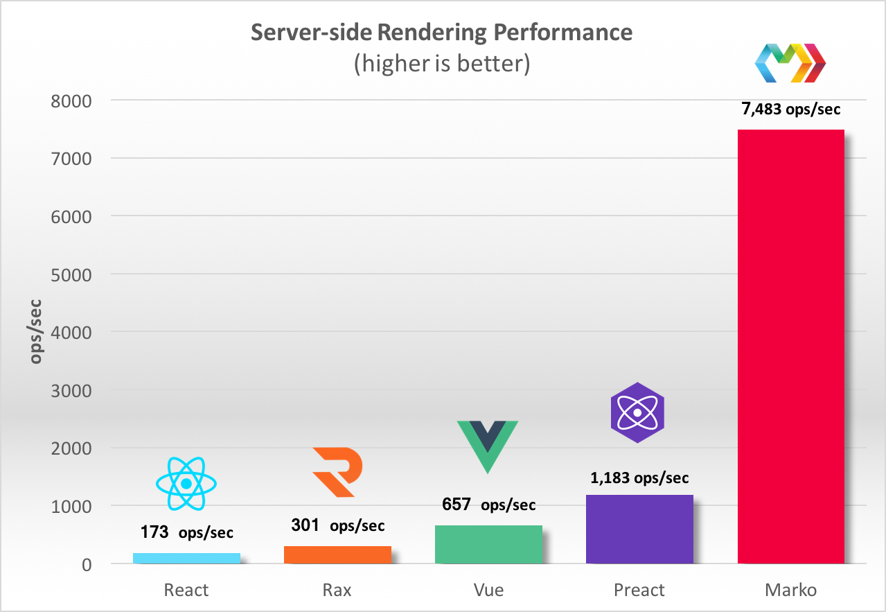

Currently, we are producing the first ever generation of this web application. However, if we segment the parts of the web application, then there are many existing solutions to build parts of our application with as opposed to the entire system. Below is an outline of what we looked into, further analysis of this is available further down:
Firstly, we have to build a login system for students, who can login via university details. The options for this include using Azure Active Directory (Microsoft Service) and setup our application through there, alternatively we can use UCL API which is developed by students at UCL.
Secondly, we need to setup a 2FA (two factor authentication system) for the online class register. There an existing number of articles that help to add this to our web app generically. We need to make sure its using Microsoft systems hence the following is suitable for example: Microsoft identity-server.
Then, we have to store the register data in some sort of database, specifically a Sharepoint list as wanted by our client. Since this part is specific, not much research in terms of where to store is necessary, but what is needed is how and what to access within Sharepoint and how to setup Sharepoint to actually take in and store data. Additionally, research is needed into APIs to use in order to communicate with Sharepoint through our web app.
In addition, we need to allow students to fill out forms for feedback on how lectures are currently going as well as their mental wellbeing (work pressure). This part requires research into existing forms available as well as systems that can securely store the forms data in order to be accessible by staff members, through Sharepoint. An appropriate option would be MS Forms.
Our team wrote an article about implementing single sign on (SSO) and it can be found here .
This web app should support all device types, it's made for students hence compatibility between all devices is necessary.
This section is divided into parts describing programming language, frameworks, libraries, APIs and extras that we have researched for this project. Comparisons have also been made where appropriate (where we allowed flexibility of choice).
Single Page App vs Multi Page App The first task was to pick an appropriate language/framework to produce our system in. We had 2 options, one was to use a standard HTML,CSS,JS system and the other was to design a single page application using React. There was a few things to consider in terms of non functional requirements which we would need to take into account. Below is a comparison of React and traditional multi-page apps:
Conclusively, we have decided to go ahead with a single page app. Firstly, single page apps load faster meaning it would be convenient for users. Also, SPAs are supposed to be for lightweight applications, which works perfectly for our use case. Additionally, if we were to logically think about a thread model here, it is unlikely someone would hack into the site with a XSS attack as there is no information stored locally, it would all be in MS Graphs. Due to the additional layer of 2FA, hacking of the register for example is also unlikely to happen.
Which JavaScript framework to use for SPA? There a few main frameworks/libraries to consider here in terms of what to pick:
Below is a speed comparison chart between the different frameworks(6)

With regards to the information above, we have decided to go ahead with React. Firstly, it is the fastest according to the chart above in server side rendering. Secondly, it is fairly easy to pickup as well according to many sources meaning it is appopriate to use this since 2/3 members have never done web development and we only have around 11 weeks for this project. The requirements are also biased towards front-end development and a few api calls to MS Graphs to produce the required functionalities of the application meaning React would be suitable here. The most important reason is that we can easily incorporate the backend code and some of the front end logic for making a native application for Android and Apple. In our first prototype we plan on making a responsive web-app and then move that to react native during the 2nd prototype stage.
The main API we have researched is MS Graphs API as this was really what constituted the requirements. We can make appropriate calls to Graphs which contains user information in order to make a personalised experience for them. This exposes a REST API to access data from MS Cloud services. For example, we can use this to develop the engagement section where we can add a part that gets data from a students calendar and display what events they are signed upto or need to attend. Below is a link to the Graphs API: https://docs.microsoft.com/en-us/graph/overview.
Our partner introduced us to the graph explorer which lets us make example API calls to Graphs to see examples of responses we would get. This is particularly useful to ensure you make the right API call to the right resource. Since this app is supposed to be generic, we can define a generic API call to MS Graphs and the only thing we would need during deployment is an authentication token from Azure Active Directory. Again a link to this is here: https://developer.microsoft.com/en-us/graph/graph-explorer?request=me&version=v1.0.
Another important API was the Microsoft Learn API. This was a simple catalog which contains the details, in a JSON format, of all the modules and learning pathways that Microsoft provided. This was useful as our application would make a API call to retrieve this data and present it to the user in the case where they require assistance in a particular topic. In order to complete the module, students must head over to the actual website which our app would link to. Details regarding the MS Learn API is detailed below: Link to MS Learn Catalog.
The response body of calling this API would look as follows:
{
"modules": [ ... ],
"learningPaths": [ ... ],
"products": [ ... ],
"roles": [ ... ],
"levels": [ ... ]
}
We are particulary interested in just modules and learning paths so the appropriate courses according to the user input can be extracted from there.